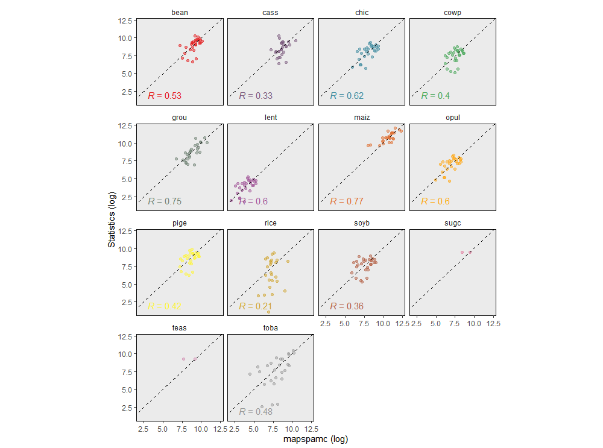
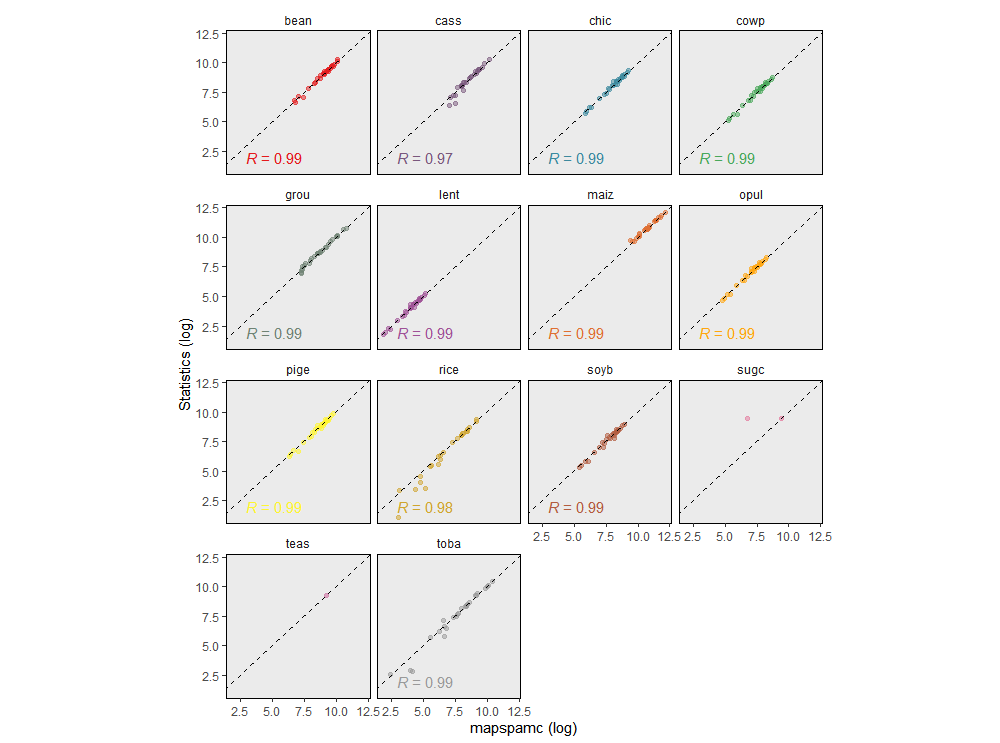

Technical validation of a model is important to check whether it is
reliable and can produce credible results (Vliet
et al. 2016). The most common approach to evaluate a model is to
compare model outcomes with actual observations. This approach is not
easy in case of mapspamc as all (subnational) crop
statistics are used as input by the model. Previous studies have
compared SPAM output with level 3 administrative unit statistics (You and Wood 2006) and satellite imagery (Joglekar et al. 2019) but such data is often
not available, in particularly for developing countries. As an
alternative, Yu et al. (2020) proposed an
approach in which the model is run with level 1 administrative unit
constraints only (i.e. level 2 subnational information is not used as
input) after which the results are compared with the available level 2
administrative unit statistics. The reasoning for this is that if the
model is able to adequately predict the location of crops using coarse
administrative-unit constraints, similar performance can be expected
when additional fine-grained subnational statistics are used to
constrain the model.
The folder 06_model_validation contains scripts that
implement the validation approach used by Yu et
al. (2020). In 01_alternative_model_setup.R, the
parameters are set to solve the model using level 1 subnational
information only. By default the same parameters are used as set for the
main model (e.g. min_entropy or max_score,
year and res). The only difference is that
adm_level is set to 1. Note that if only level 1
administrative unit statistics are available, the models will be the
same and there is no added value in running the validation scripts.
There is no need for the user to adjust the parameters in
01_alternative_model_setup.R. This script is sourced when
implementing 02_prepare_and_run_alternative_model.R, which
runs the alternative model, which is used as benchmark for the
validation. As the input data is the same as for the main model, all
data pre-processing steps will be skipped.
After the alternative model is completed, the user can run
03_model_validation.R, which compares the results of the
alternative model with level 2 subnational statistics. In the first part
of the script the grid-level harvested area results are aggregated to
derive level 2 administrative unit totals.
# Aggregate gridded output to adm level of model specified by param
results_alt_ag <- aggregate_to_adm(param, alt_param) %>%
mutate(source = "model")In the remainder of the script, the model output is compared with the
subnational crop statistics. The figure below shows the results for the
Malawi min_entropy. For 14 out 29 crops level 2
administrative unit statistics are available (but note that for teas and
sugc, there are only a few observations, which makes statistical
comparison impossible). The predictions are relatively good for maize
(R2=0.77) and groundnuts (R2=0.75), while a poor
fit was found for rice (R2=0.2) and cassava
(R2=0.33). The values for the crops with the best fit are
comparable to those presented by Yu et al.
(2020), who reported an R2 of 0.66-0.94 for maize,
cotton and rice in Brazil.

Comparison of level 1 administrative unit constrained model aggregated to level 2 with subnational statistics for the min_entropy model
Another approach to validate the model is to compare the subnational statistics with subnational aggregated results of the main model. There should be near perfect correlation between both datasets as the model uses the subnational statistics as a constraint to allocate crop area. Slight deviations are the result of slack, which is added to the model to allow for some flexibility and prevents the model from becoming infeasible (see Appendix).

Comparison of level 2 administrative unit constrained model results aggregated to level 2 with subnational statistics for the min_entropy model